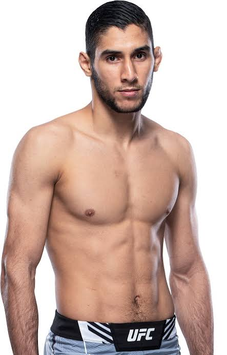
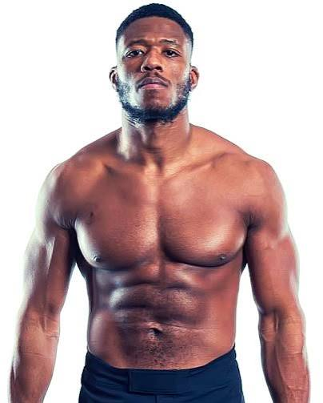
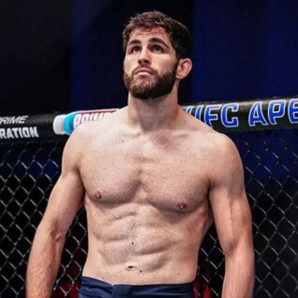
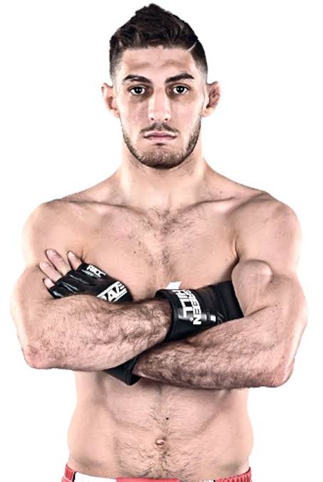
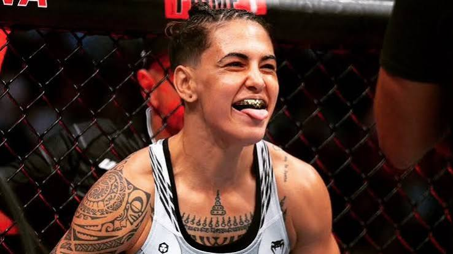
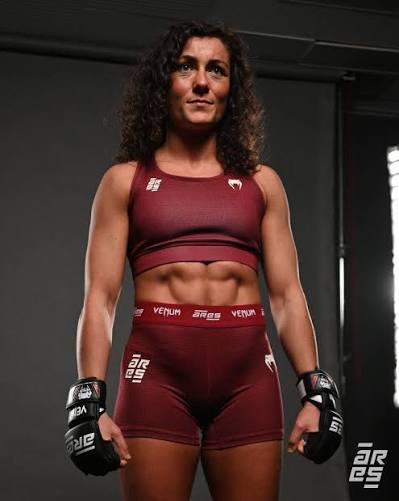

Accueil · UFC Paris 2026 · Combattants français
Les Français de UFC Paris 2026 : qui combattre, et pourquoi ça compte

La cinquième UFC Paris aligne l’une des cartes les plus denses en combattants français depuis l’arrivée de l’organisation à Bercy. Sans anticiper les résultats du 5 septembre 2026, voici les profils repérés, leurs enjeux respectifs et les liens avec le circuit hexagonal — ARES, galas locaux, formation en club.
Carte complète : UFC Paris 2026 carte · Contexte : présentation.
Salahdine Parnasse — main event, débuts UFC
Le nom le plus visible. Salahdine Parnasse, surnommé « Super Prodige », arrive de la KSW avec plusieurs titres européens au compteur et une réputation de finisseur polyvalent. Son premier combat UFC, contre Dan Hooker, place un Français en tête d’affiche à domicile — situation rare et symboliquement forte pour le public parisien.
L’enjeu : prouver que le niveau KSW se transpose à l’octogone UFC, et entrer dans la conversation des poids légers. Portrait détaillé : Parnasse, les débuts à l’UFC.
Farès Ziam vs Axel Sola — 100 % français en poids légers

Farès Ziam est un habitué de l’UFC, connu pour son jeu de distance, ses coups de pied et sa capacité à gérer la cage. Axel Sola arrive avec l’élan d’un champion ARES récemment passé pro UFC — rappel : Sola a laissé la ceinture ARES à Walid Masmoudi (voir ARES 42 pour le contexte du circuit français).
Ce duel franco-français en main card est un classique de « passage de relais » : l’expérience UFC contre le momentum du circuit national. Le gagnant peut espérer un bond dans le classement des 70 kg ; le perdant devra rebondir vite dans une division profonde.
Morgan Charrière — plumes, public Bercy

Morgan Charrière (« The Last Panda ») a déjà connu l’Accor Arena et possède une base de supporters importante. Face au Brésilien Felipe Lima, il cherche à confirmer qu’il reste un outsider crédible en poids plumes — division où quelques victoires enchaînées changent la donne pour un contrat et une visibilité.
Enjeu : rester dans la zone « ranked » ou en approcher, et capitaliser sur l’énergie du public français un samedi soir.
Oumar Sy — préliminaires, mi-lourds

Oumar Sy représente la nouvelle génération formée en France avec une visée internationale. Opposé au Lithuanien Modestas Bukauskas, il aborde un test de niveau en poids mi-lourds : division exigeante, où l’expérience octagon et la gestion de la puissance font souvent la différence.
Pour Sy, une victoire à Paris serait un signal fort pour les prospects français dans une catégorie historiquement dominée par des profils nord-américains et européens de l’Est.
Matthieu Letho Duclos — moyens, pré-carte

Matthieu Letho Duclos affronte le Brésilien Luis Felipe Dias en préliminaires, en poids moyens. Il arrive d’Hexagone MMA, où il a porté une ceinture des moyens. Profil striking-first, premier test UFC à domicile : les débuts à Bercy aident le mental, pas les cinq minutes de chaque round.
Michael Aljarouj — mouches, première UFC

Michael Aljarouj débute contre l’Espagnol Fabià Sintes, également nouveau venu, en poids mouches. Combat de projection : deux styles européens, une catégorie souvent négligée du public français, et une place à prendre chez les −57 kg. Aljarouj a déjà un passé en MMA GP ; l’UFC est un autre tempo.
Nora Cornolle — coqs femmes

Nora Cornolle porte les couleurs françaises chez les femmes, en poids coqs, contre la Polonaise Klaudia Syguła. La division féminine coq reste jeune à l’UFC ; une performance marquante à Paris peut accélérer une trajectoire et attirer l’attention des matchmakers.
Enjeu médiatique et sportif : être la figure féminine tricolore de la soirée, dans une carte où Benouaich complète le tableau.
Delphine Benouaich — pailles femmes

Delphine Benouaich affronte Sofia Montenegro en poids pailles. Combattante issue du circuit français, elle profite de l’ancrage local de l’événement pour se présenter au public UFC. Les poids pailles féminins offrent des opportunités rapides pour celles qui enchaînent les victoires convaincantes.
Le contingent français
Neuf tricolores sont donc sur la carte : Parnasse, Ziam, Sola, Charrière, Sy, Cornolle, Duclos, Aljarouj et Benouaich. Certains titres plus courts parlaient de « huit Français » en omettant Aljarouj ou Sola selon les versions.
Bilan attendu pour le MMA français
Au-delà du score individuel, Paris 2026 sert de thermomètre : combien de Français gagnent, contre quels profils, avec quel impact sur les classements ? Le lien avec ARES (Sola, Zébo, Masmoudi) montre aussi un écosystème où l’UFC et les ligues nationales se nourrissent mutuellement.
Historique des éditions passées : UFC à Paris depuis 2022. Analyse du main event : Hooker vs Parnasse.